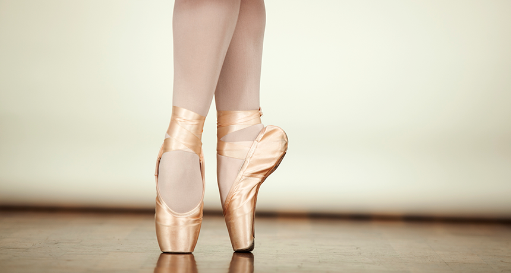
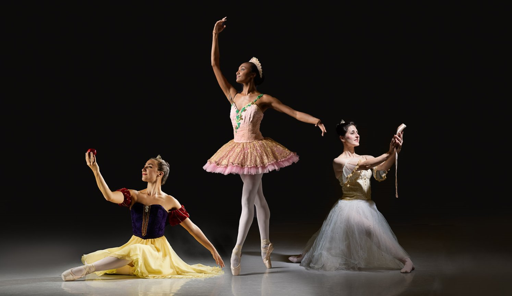
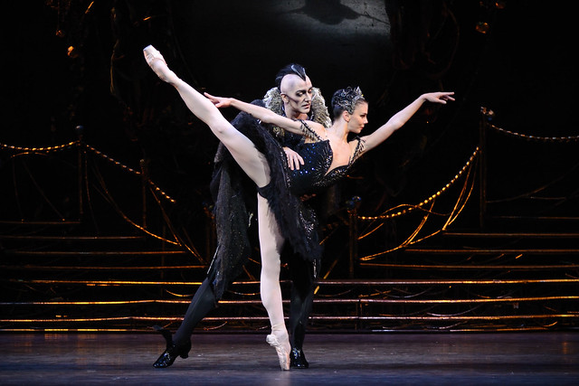
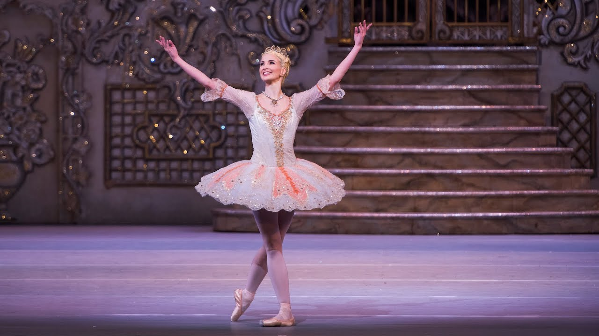
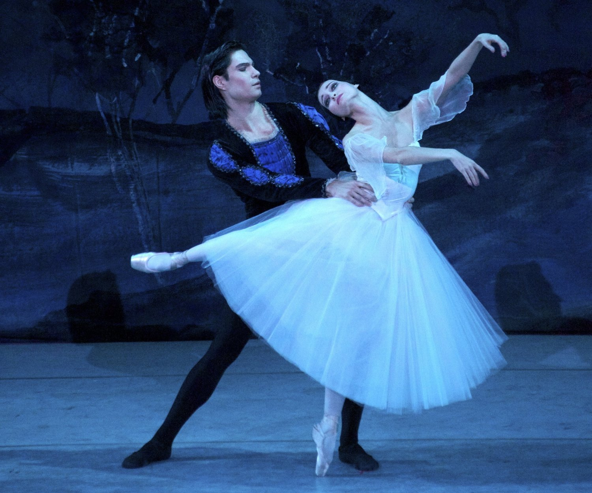
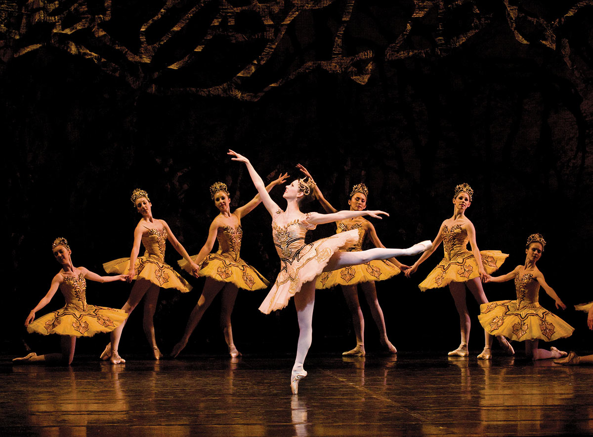
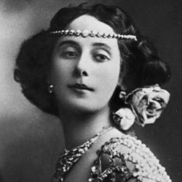
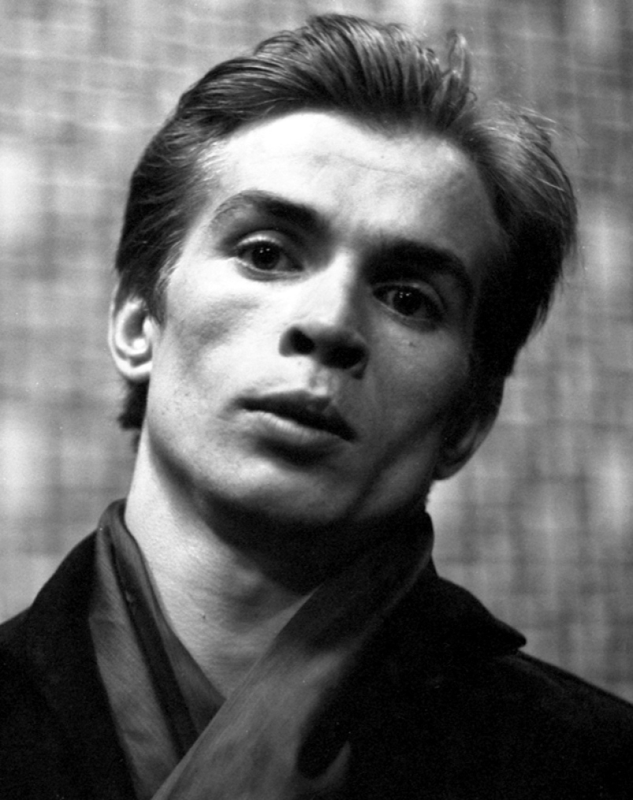

All ballet was started in Italy. It used to be called ballare which means dance in Italian. Back then ballet was different than the art form we know today. The costumes were heavier, pointe did exist, and it was performed at royal weddings. So when Catherine, the daughter of the ruler of Florence, married Henri the Second before he became king, she brought ballet to France. It was in France where ballare was changed to ballet. Ballet was often danced by royals. The dance had to have music and when ballet became more popular in France, a plot was added and the dances began to tell a story.
Four men, King Louis XIV, Jean-Baptiste Lully, Pierre Beauchamp, and Molière, had a huge impact on ballet. Louis XIV ruled France from 1643 to 1715 and was a ballet enthusiast from a young age. The court encouraged him to take part in ballets and he made his debut when he was 13 in Ballet de Cassandre. Two years later he played Apollo, the sun god, in The Ballet of the Night. His fancy golden costume and his performance helped him get his nickname, the Sun King. Louis believed in a strong technique so he founded the Academie Royale de Danse, the first dance school in the world, and the Academie Royale de Musique, aka the Paris Opera. From the Paris Opera came the first ever professional ballet company, the Paris Opera Ballet. Jean-Baptiste Lully was an Italian composer and dancer who moved to France and became the favourite of King Louis XIV. The two of them performed together in many dances until the King retired. He was the one who decided to let females dance onstage and is the director of the Academie Royale de Musique. Pierre Beauchamp was the one who trained Louis the XIV and came up with the 5 ballet positions. Molière was a playwright and a director. He worked with Pierre Beauchamp and Jean-Baptiste Lully to create many pieces of art for King Louis XIV.
Men used to play both genders in the ballet but once pointe was created, the roles requiring it were given to women. Pointe is when a dancer supports all their body weight on the tips of their feet while wearing pointe shoes. Dancing en pointe was created to give the dancers an angle-like appearance. The modern pointe shoe was created by Anna Pavlova.
Dancers generally start pointe when they are 12-14 years of age. Prior to that their bones might still be soft and dancing en pointe with soft bones often result in serious and permanent foot injuries and deformed feet. Exceptions may be made if a dancer’s physician has determined that their feet have ossified. Most ballet studios will require the dancer to get an x-ray of their feet done so their physician can verify whether they are ready for pointe work or not. Another key factor in determining whether or not a dancer can begin pointe is strength in the legs, ankles, feet and core. Without strong enough ankles, feet, and legs a dancer is likely to hurt themselves on pointe or be too weak to stay on pointe for the duration of a routine. A strong core ensures the dancer maintains their center and helps with balance.
A dancer has to have been dancing for a number of years before their teacher thinks about moving them on to pointe. They have to be able to maintain a turnout while center combinations, hold a proper ballet position with a good turnout and straight back, pull up properly in the legs, and balance securely in a releve. Once their teacher determines they’re ready for pointe, dancers typically take pre-pointe class for a year before they’re allowed to get pointe shoes. However it is up to the instructor to determine if one year of pre-pointe is sufficient or if they need more time to prepare. Preparation for pointe work begins with barre exercises to strengthen feet, ankles, legs, and core. After completing barre work the student will move to the center to do exercises that emphasize various aspects of proper ballet technique such as turnouts, pointing of toes and the use of technique while on pointe.
 The Brooklyn Melodies Music Center page on different ballet styles and techniques has lots of information on ballet.
Ballet is the most graceful form of dance, but many hours are put in to make it that way. We need to look past the graceful performance we see on stage to see that ballet requires hard and vigorous training. Ballet engages your entire body from head to toe. Each exercise done at the barre works a different muscle and your mind has to be able to keep up. Most people who take up ballet come out of the studio with sore feet and aching muscles. Professional dancers train 6-7 hours a day for 6 days a week. To make it as a professional you need to start dancing at a very young age and have at least 10 years of prior training. If dancers want to join a company they usually undergo intensive training when they are 16.
Swan Lake has remained the most beloved and iconic ballet since the 19th century. This classical ballet is a romantic piece and is performed regularly by companies all over the world. The extraordinary range of thematic and emotional possibilities the ballet provides, combined with the incomparable score of Tchaikovsky, make it a ballet experience like no other. It is a timeless love story that mixes magic, tragedy, and romance into four acts. It features Prince Siegfried and a lovely swan princess named Odette. Under the spell of an evil sorcerer, Von Rothbart, Odette is forced to spend her days as a swan swimming in a lake of tears, Swan Lake, and resumes her human form at night. She meets Prince Siegfried and tells him that her curse can only be broken if a man pledges his love for her. Von Rothbart interrupts Siegfried as he is about to confess his love for her. He takes Odette away and the prince is left alone at Swan Lake. The next night at the ball, Rothbart transforms his daughter Odile to look exactly like Odette. The two dance and Siegfried proposes, thinking the imposter is the Odette. Unbeknownst to him, the real Odette was watching at the window the entire time but fled when he proposed. Siegfried realizes his mistake and chases after her. He finds her on the shore of Swan Lake and explains how he was tricked by the sorcerer and his daughter. Odette forgives him but Von Rothbart and Odile appear demanding that the prince must keep to his word and marry Odile. Siegfried tells him he would rather die and jumps into Swan Lake with Odette. The spell is broken and the remaining swans turn human again. After drowning Rothbart and Odile they watch the spirits of Odette and Siegfried ascend to Heaven. Over the years the ending has changed. Some choreographers choose to end the tale with Odette and Prince Siegfried living happily ever after, but some stick to tragic endings with their own little twist. In a version danced by the National Ballet of Canada in 2010, Odette forgives Siegfried for his betrayal and the two get a moment of happiness before Rothbart conjures up a violent storm. When the storm subsides Odette is left alone to mourn a dead Siegfried.The most challenging move in Swan Lake is when Odile does 32 fouette turns in a row. Another challenging dance from Swan Lake is the Danse des Petits Cygnets (Dance of the Little Swans), also known as a pas de quatre (dance of four). It requires all four dancers to perform the moves the same, making it very difficult. You can watch the full Danse des Petits Cygnets performed by the Royal Opera Ballet.
The Nutcracker is a Christmas favourite. It is performed by countless ballet companies, especially during the Christmas season. Major American companies generate around 40% of their annual ticket revenues from their Nutcracker performances. The festivities just aren’t complete without this holiday classic. The original Nutcracker production was a complete failure but Tchaikovsky extracted a 20 minute suite and spun it into a huge success. The story starts on Christmas Eve at the Stahlbaum Christmas party. Clara Stahlbaum receives a beautiful, wooden Nutcracker doll from her Uncle Drosselmeyer which her younger brother, Fritz, breaks. Drosselmeyer mends the doll. Later that night Clara sneaks downstairs to check on her beloved doll. When the clock strikes twelve all the toys come to life. Clara finds herself in the middle of a battle between the toy soldiers and the mice. The Nutcracker is leading the soldiers into battle and takes on the seven headed Mouse King. Just as the mice are about to win Clara hits the Mouse King with her shoe, knocking him out. The mice are defeated and they retreat. The Nutcracker transforms into a handsome prince and leads Clara through a moonlit forest while snowflakes dance around them (Waltz of the Snowflakes). Clara and the Prince travel to his kingdom, the Land of Sweets, which is being ruled by the Sugar Plum Fairy in his absence. The Prince recounts how Clara saved his life and in honor of the young heroine a celebration is held. Sweets are produced from all over the world and everyone dances. To conclude the night, the Sugar Plum Fairy and her Cavalier perform a pas de deux (dance of two). The ballet comes to an end when Clara and the Prince ride away in a reindeer drawn sled waving back to all the kingdom’s subjects. Just like Swan Lake, there have been various adaptations of the Nutcracker. The National Ballet of Canada replaced Clara with two sisters, Marie and Misha, and focuses more on how their adventure guides them from childhood to adolescence. However the story mentioned above is the original rendering of the Nutcracker and the one performed the most often.
Giselle is a romantic ballet told in two acts. It is one of the world’s most performed classical ballets and one of the most challenging to dance. This haunting ballet tells the romantic yet tragic story of a beautiful young peasant girl named Giselle who falls for a disguised nobleman, Albrecht. Giselle dies from heart break after discovering her lover, Albrecht, is betrothed to another woman named Bathilde. Albrecht disguises himself as a humble villager, Loys, in order to seduce Giselle. Hilarion, a local gamekeeper, is also in love with Giselle and is suspicious of Loys. Giselle’s mother is very protective of her daughter because of her weak heart condition and discourages Giselle’s relationship with Loys, thinking Hilarion would be a much better match for her. During the harvest activities, Loys real identity is revealed and Giselle dies from a broken heart after discovering her lover is betrothed to another woman named Bathilde. Giselle’s spirit is taken by the Wilis and they induct her into their clan. The Wilis is a group of women who have all died from heartbreak. They are lead by their merciless queen, Myrtha, and they haunt the forest taking revenge on any man they come across. Albrecht visits Giselle’s grave and weeps. Giselle’s spirit appears and Albrecht begs her for forgiveness. Giselle forgives him for her love is undiminished unlike her vengeful sisters. She disappears to join the rest of the Wilis and Albrecht follows her. The Wilis have forced Hilarion to dance until he is nearly dead then drowned him in a lake. They are about to do the same to Albrecht but Giselle’s love counters the Wilis magic and his life was spared. Having broken through the chains of hatred and vengeance that controlled the Wilis, Giselle says a tearful goodbye to Albrecht and returns to her grave to rest in peace. In a variation done by the Royal Opera Ballet, Giselle stabs herself with a sword successfully ending her life.
The Sleeping Beauty is one of the greatest classic ballets that tell a story. It is based off a fairy-tale written by Charles Perrault of a princess who is cursed to sleep for one hundred years. The ballet captivates its audience but it is also very technically challenging, especially for Princess Aurora. A lot of stamina is required in act 1 and you need to dance with a certain lightness in your step because you are portraying a young girl who just arrived at her 16th birthday party. One of the hardest parts to dance is when Princess Aurora is presented with four suitors and needs to maintain balance on pointe while in an attitude position. Many people are familiar with the story of Sleeping Beauty, but The Sleeping Beauty ballet is slightly different than the version most people know. The first scene in the ballet is Princess Aurora’s christening. Six fairies are invited to the ceremony to bestow gifts upon the child. Each fairy brings a gift of a positive trait or virtue such as bravery, kindness, beauty, musical talent, even mischief. Before the Lilac Fairy, the most powerful fairy, and bestow her gift, the evil fairy Carabosse arrives. She is furious that she wasn’t invited to the christening and curses the Princess so that on her 16th birthday she’ll prick her finger on a spindle and die. The Lilac Fairy intervenes and alters the curse so that instead of dying she’ll just sleep peacefully for 100 years and will be awakened by the kiss of a handsome prince. On Aurora’s 16th birthday a cloaked figure arrives and presents her with a spindle. Having never seen one before she examines it with curiosity but pricks her finger. The cloak figure then reveals herself to be Carabosse and leaves the party believing the Princess is dead. The Lilac Fairy reminds the King and Queen that Aurora is not dead, just sleeping. She then casts a sleeping spell over the entire kingdom which will only be broken once Aurora wakes up. Thick, thorny plants then grow over the palace, hiding it from view. One hundred years later Prince Florimund is attending a hunting party but is unhappy and asks to be left alone. He meets the Lilac Fairy in the forest and she shows him a vision of the beautiful Aurora and the prince is immediately smitten. She explains the situation to him and together they go to the castle. Carabosse tries to stop them but gets defeated. Florimund kisses Aurora waking her up as well as the rest of the kingdom. The two get married and many fairy tale characters attend, including Puss in Boots, the White Cat, Princess Florine, and the Bluebird. Aurora and Florimund perform a pas de deux and the entire ensemble dances.
Anna Pavlova was a Russian prima ballerina in the late 19th and early 20th century. She is most recognized by her role of The Dying Swan and became the first ballerina to tour the world. Pavlova was a premature child and because of that she was regularly fell ill. Her love and passion for ballet was ignited when her mother took her to see a performance of the original production of The Sleeping Beauty. When she was 9 years old she auditioned for the Imperial Ballet School but was rejected because of her sickly appearance. She tried again when she was 10 and this time she was accepted. Classical ballet did not come easy to Pavlova and her training was difficult. Her severely arched feet, thin ankles, and long limbs were made fun of by her fellow students. Pavlova trained to improve her technique. She took extra classes and graduated at age 18 (1899). Right after graduation the Imperial Ballet chose her to join the company as a second soloist (she skipped a rank from corps de ballet to second soloist) and she accepted. Pavlova made her official debut in Les Dryades Pretendues by Pavel Gerdt. Pavlova formed her own ballet company and performed around the world. While touring the netherlands, she was told she had pneumonia and required an operation. If she went through with the operation she would have never danced again, so she refused it saying she would rather die than not be able to dance. In 1931, 3 weeks before her 50th birthday, she died from pleurisy. Anna Pavlova inspired many generations to do ballet and is considered one of the greatest dancers of all time.
Rudolf Nureyev was a Soviet ballet and contemporary dancer and choreographer. He was named Lord of the Dance and is greatly regarded as the greatest male dancer of his generation. His mother took him and his sisters to a ballet performance of Song of the Cranes and he fell in love with the art. As a child he danced in folk dances and was noticed by teachers who encouraged him to train in Saint Petersburg. He left a local touring ballet company for the Mariinsky Ballet School because he believed they were the best. He also auditioned for the Bolshoi Ballet and was accepted. However due to World War 2, Nureyev was unable to enroll in a major ballet school until he was 17 when he was accepted by the Vaganova Academy of Russian Ballet (the associate school of the Mariinsky Ballet). Upon graduation in 1958, Nureyev joined the Kirov Ballet (now known as the Mariinsky Ballet). He immediately moved past the corps de ballet level and was giving solos as a principal dancer. It wasn’t long before he became one of the Soviet Union's best known dancers. Nureyev was offered a contract to join the Royal Ballet as a principal dancer and he accepted. During his time at the company he enraged many critics because of the changes he made to productions of Swan Lake and Giselle. Nureyev danced with the Royal Ballet until the 1980’s before committing to the Paris Opera Ballet. In 1983 he was appointed director of the Paris Opera Ballet. He remained there as a dancer and choreographer until 1989. He also coached younger dancers such as Sylvie Guillem, Isabelle Guerin, Manuel Legris, and Monique Loudieres. He also formed connections with companies from all over the world, including the National Ballet of Canada. Rudolf Nureyev died in 1993 from AIDS.
The Paris Opera Ballet is the oldest national ballet company. It was founded in 1669 by King Louis XIV. When it was founded it was placed under the leadership of Jean-Baptiste Lully. In 1672 the Paris Opera Ballet started limiting their use of dancers and musicians. The first performance was a mix of the pieces Lully created for Louis and new pieces that were choreographed by Anthonie des Brosses. The main difference between the court ballets and the company ballets was that professionals were the only ones allowed to dance. Currently the Paris Opera Ballet consists of 154 dancers and they give 180 performances a year at the Palais Garnier. You can learn more about the Paris Opera Ballet by going on their website.

The Mariinsky Ballet is a classical ballet company founded in the 18th century. It was originally known as the Imperial Russian Ballet and is one of the world’s leading ballet companies. The Mariinsky Ballet is also known by its Soviet name, the Kirov Ballet. It was originally called the Imperial Theatre School and was established on May 4, 1738 at the Winter Palace in Saint Petersburg. The school was founded by Jean-Baptiste Lande with the purpose to train young dancers to form the first Russian ballet company. Following the Russian Revolution, the Soviet government decided to close down both the school and the company. The company reopened as the Soviet Ballet and was later renamed the Kirov Ballet after the revolutionary Sergey Kirov was assassinated. The company regularly performed at the Mariinsky Theatre giving it its name Mariinsky Ballet. The school is now known as today’s Vaganova Ballet Academy. Today the Mariinsky Ballet employs over 200 dancers and is recognized as one of the world’s greatest ballet companies. You can learn more about the Mariinsky Ballet by visiting their website.
The Bolshoi Ballet is an internationally renowned classical ballet company, based at the Bolshoi Theatre in Moscow, Russia. It was founded in 1776 and is one of the world’s oldest ballet companies. The earliest origins for the Bolshoi Ballet can be found when a dance school was created for a Moscow orphanage in 1773. Dancers from the school were employed to form a new theatre company in 1776. The company originally performed only at private owned venues but later acquired the Petrovsky Theatre, which was rebuilt as the Bolshoi Theatre. Despite putting on performances of famous ballets, the Bolshoi Ballet struggled to compete with the Imperial Russian Ballet, now known as the Mariinsky Ballet. When Alexander Gorksy was hired in 1990 the company began to develop its own unique identity. For more information on the Bolshoi Ballet visit their website.
The Royal Ballet is an internationally renowned classical ballet company based at the Royal Opera House in Covent Garden, London, England. It is also known as the Royal Opera Ballet. The Royal Ballet was one of the foremost ballet companies in the 20th century and continues to be one of the world’s most famous ballet companies to this day. The company employs approximately 100 dancers and is known for its artistic and creative values. The Royal Ballet is one of the few companies who have employed dancers considered prima ballerina assoluta: Margot Fonteyn, Alicia Markova, Phylliss Spira, and Alessandra Ferri. The Royal Ballet owes its existence to Irish dancer Ninette de Valois, founder of the Academy of Choreographic Art, a dance school for girls. Her dream was to open a repertory ballet company and school and that lead her to partner with Lilian Baylis. Together they worked together to create the company Vic-Wells Ballet and the Vic-Wells Ballet School. However it was renamed the Sadler’s Wells Ballet and the Sadler’s Wells Ballet School after losing a theatre. In 1946 the company was invited to become the resident ballet company of the newly reopened Royal Opera House in Covent Garden. A Royal Charter was granted to both the school and the company in 1956 and they were renamed the Royal Ballet and the Royal Ballet School. Ypu can learn more about the Royal Ballet by going to their website.
These are the four oldest and most prestigious ballet companies in the world. However two ballet companies deserving of mention are the American Ballet Theatre and of course our very own National Ballet of Canada.